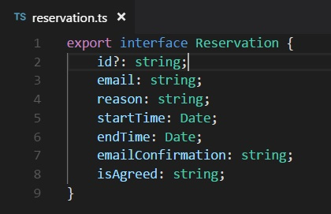
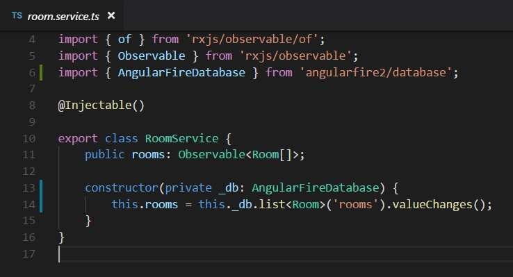
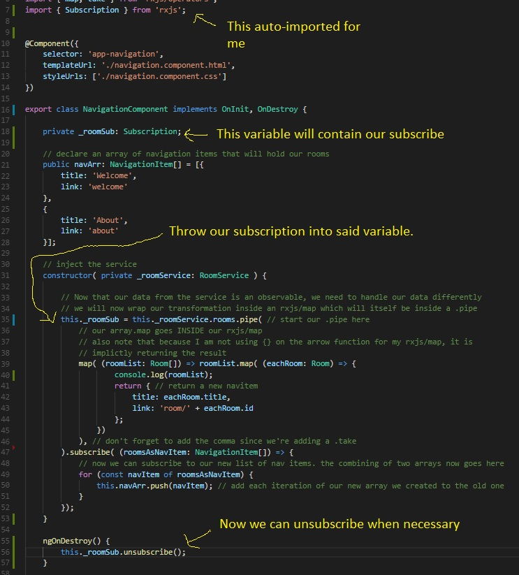

It's about that time: We're going to begin integration our firebase database into our app, but we will need to make some preparations first:
Make sure in your app.module.ts that you are importing the AngularFireDatabaseModule, both up top, and in your imports array. Also, since the order of our imports array matters, make sure that it comes after your general AngularFireModule.
You should now have three firebase modules inside your app module: AngularFireModule (first), AngularFireAuthModule, and AngularFireDatabaseModule.
Each of our rooms inside the database will also have a list of reservations, and we will be dealing with that data eventually, so we may as well make that interface now.
This might be your first time seeing a question mark inside an interface; this means that particular property (in our case, id) is optional, and an object of type Reservation can exist without an id.
The reason we do this is because not all of our reservations will have an id at all times; when you look at how the data is stored, you will notice that the id is not one of the values, but instead is the value of its parent. This isn't terribly uncommon. We will work some magic later to append that id.
Having optional properties can be useful in scenarios like this where you may have to append data on to an object, just make sure that you are only using optional properties if it makes sense within the context of the application. Remember that type safety is important, and keeping things optional just adds more variance to our types.
Now it's time for the first phase, bringing in a list of rooms for our navigation component. If you remember how we organized our flow, our navigation component is currently bring in a list from the room service that is an observable and then mutates that data in order to display it. Since the data is grabbed from the room service, let's start there.
Earlier, we were manually typing our an array and using of() to transform it to an observable. We won't need to do that anymore. We just need two steps:
First part we should be used to by now: Bring in AngularFireDatabase from 'angularfire2/database'. Inject the database inside our constructor:
constructor(private _db: AngularFireDatabase) {
}
Now for the magic: We already have a variable set up to be an Observable array of rooms. Now let's assign the value of that variable to our database list:
constructor(private _db: AngularFireDatabase) {
this.rooms = this._db.list<Room>('rooms').valueChanges();
}
Let's break down that line: We call the .list method of our Database and have a weird notation of Room immediately after. This is a generic. We couldl probably do a whole lesson on generics (and I might), but essentially generics allow us to write methods that can deal with any time, but still retain the type throughout the method. For example, if I used a paramter of type any on a method, there will be no information on that paramter whatsoever. Generics allow us to retain it. The typescript page on generics explains this much better than I can:
Official Typescript Generic DocumentationAfter the generic, we call 'rooms', this is referring to the directory inside the database. The valueChanges() method afterwards is a special format of the data and returns an observable that emits every time the data is changed.
Awesome, that's exactly what we want. Assuming we have no errors, we are setting that rooms variable to an observable array of Rooms, just like before. If you check out your nav component, you should see the room list. If you hooked up your own firebase database, you will need to make sure that your rooms list is populated on the database, but the bonus is that you can watch the nav component change in realtime as you edit your data.
This was the primary reason we did all that rxjs/of business and the .pipe.subscribe in the component: Because we already set up our app to deal with observables, the act of plugging in one observable in place of another is trivial.
Here's how my room service looks:
It is worth noting that it's generally rare to pull variables directly from a service; It's more common to have a method that returns a service variable, even if that's the only thing that method does. For example, I probably should have wrote a method called getRooms() whos only function is to return the observable we made. I didn't do that here because that would require a little bit of editing of our components, and I didn't want to throw too much at you guys, but if you want to do so, or already did, then good work.
My data isn't updating. It shows up just fine, but when I change the data, the app doesn't change.
This happened to me too, and also happened to us in class. This is a byproduct of using 'rxjs/take' inside our nav component. Open up the file.
If you remember when we talked about our subscriptions inside our navigation component we did bring up that in addition to subscribing, you must always make sure to unsubscribe when appropriate to avoid memory leaks and other side effects. There were a couple of solutions we had.
Do you remember what take(1) does? It makes a subscription emit once, and only once. That's great for our memory concerns, but in this case we want our data to be persistent, so let's switch to the onDestroy method. Go ahead and remove the take(1) as well as the take import up top. Here is a screenshot detailing the changes:
We pull in the subscription for typing purposes, create a variable of that type, and assign it to the result of our .subscribe. We then implement OnDestroy, create an ngOnDestroy method, and unsubscribe in there so in the event someone leaves our navigation component, the subscription will be removed.
Now you may note that our navigation component is always there, so is there really a need to unsubscribe to a component that is always displaying and will never be destroyed? The answer to that is no, it's not necessary, but it's still good practice to do. You never know what features you may add to a application that would require not displaying our nav component, and should we choose to do that, our unsubscribes are already taken care of and we have nothing to worry about.
Next one's a big one, not just because its lesson 30, but we're going to start getting actual data from our rooms. Getting a room list is one thing, but we're going to want to have our reservation list displaying information so we will need to bring in all the pertinent room info whenever someone visits a room component. That is the bulk of what we will be tackling in the next lesson.